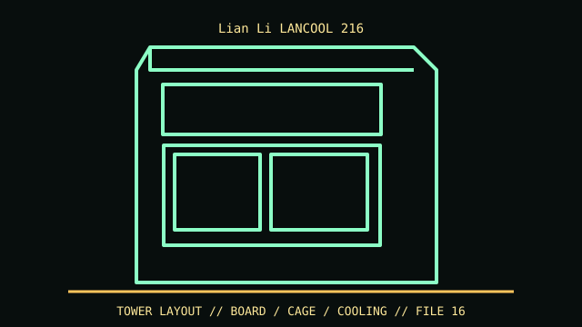

[ IDENTIFIED ENCLOSURE // LANCOOL 216 STANDARD MESH ATX CHASSIS ]
Lian Li LANCOOL 216
480.9 × 235 × 491.7 mm (D × W × H); maximum GPU length 392 mm (published clearance up to 400 mm), CPU cooler height 180.5 mm.

VARIANT / ARCHIVAL CAVEAT: LANCOOL 216 RGB/non-RGB and optional rear PCIe fan bracket differ. Verify model and included front-fan/I/O kit; retain removable lower mesh and GPU support bracket.
Mechanical specifications and fit
| Catalog identity | LANCOOL 216 standard mesh ATX chassis |
|---|---|
| Dimensions and clearances | 480.9 × 235 × 491.7 mm (D × W × H); maximum GPU length 392 mm (published clearance up to 400 mm), CPU cooler height 180.5 mm. |
| Drive bays / mounts | Two 3.5-inch HDD trays and up to six 2.5-inch SSD positions with supported mounts. |
| Board, system and compatibility | E-ATX up to 280 mm, ATX, microATX, Mini-ITX; 7 slots. Front 360 mm radiator replaces some of the 160 mm fan clearance. |
| Revision / identification | LANCOOL 216 RGB/non-RGB and optional rear PCIe fan bracket differ. Verify model and included front-fan/I/O kit; retain removable lower mesh and GPU support bracket. |
Preservation and installation notes
LANCOOL 216 RGB/non-RGB and optional rear PCIe fan bracket differ. Verify model and included front-fan/I/O kit; retain removable lower mesh and GPU support bracket.
E-ATX up to 280 mm, ATX, microATX, Mini-ITX; 7 slots. Front 360 mm radiator replaces some of the 160 mm fan clearance.
- Capture the complete model/SKU, serial/date label, board assembly and bay/backplane/riser identifiers before disassembly; keep matched screws, trays, carriers, feet and cables with the case.
- Check the cited manual's specific build option before transferring hardware. Published maximum GPU, drive, fan or radiator capacity may not be simultaneous when a removable cage or alternative riser occupies that volume.
- For rack and vintage systems, preserve the exact rails, shields, doors, brackets and model-specific safety instructions; do not infer compatibility from a familiar brand or physical connector shape.
Manufacturer manuals and archival sources
- Lian Li LANCOOL 216 technical specificationsPrimary manufacturer or model-specific technical/manual reference used for the identification and mechanical data above.
- Lian Li assembly manuals and downloadsSecond product manual, manufacturer resource or established technical archive; choose the exact regional SKU and revision.
When exact dimensions depend on configuration, the text says so; verify the measured specimen before making a fit or restoration decision.